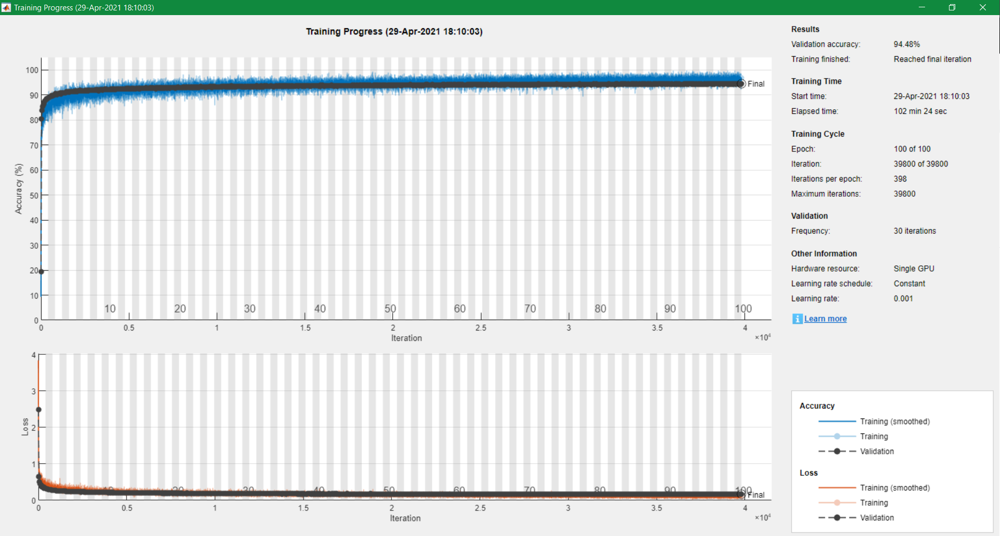

In my second-last academic term (Fall 2020) at Waterloo, I took
During that term, there were two Kaggle competitions and one final project we students needed to complete.
The second Kaggle competition was a clothing image classification task; we needed to classify the Fashion-MNIST dataset.
However, instead of using the original Fashion-MNIST, we used a .csv data file from our professor.
My solution for this Kaggle competition is implemented with a convolutional neural network (CNN) using MATLAB, and the accuracy is 93.66%.
In this article, I will explain how I derived my solution step-by-step.
A total of 60 000 rows of data are in the training .csv data file ("image_train_Kaggle.csv") for this Kaggle competition.
Each row represents a 28x28 image.
In every row, we will find the image label followed by 784-pixel values.
The label is the class of the image which there are 10 classes in this dataset:
Each class includes 6 000 images for the training dataset.
From the testing .csv file ("image_test_Kaggle.csv"), there are in total 10 000 rows.
Each row represents a 28x28 image.
In every row, it starts with an ID follows by 784-pixel values.
P.S. For copyright reasons, I will not publish those two datasets.
Using the training dataset to train a CNN model; then, using that model to classify the testing dataset.
In MATLAB, we can train a CNN model using the Deep Learning Toolbox.
However, we need to:
To complete A - D, I put them into 7 steps.
Since I want to use an image datastore object, I need to convert the given .csv files to images.
To do so, we first need to create a folder "train" with another 10 subfolders titled 0 to 9 (which represent the labels).
Then, we need to open image_train_Kaggle.csv, convert each row into .jpg image, and save each image into the subfolder that corresponds to the image label (e.g., a pair of running shoes will be saved into subfoler 7).
# create a folder "train" with another 10 subfolders 0 to 9
for i = 0:9
mkdir("train\" + i);
end
# open the training csv file
trainData = readtable("image_train_Kaggle.csv");
# create two matrices where TrainX contains the training data's pixel values
# and TrainY contains the training data's labels
TrainX = table2array(trainData(:,2:end));
TrainX = double(TrainX ./ 255);
TrainY = table2array(trainData(:,1));
# now we reshape each row in image_train_Kaggle.csv to jpg image,
# then save each image into the subfolder inside "train" based
# on the image corresponding label
#
# in addition, we will also save a flip version of each images to increase
# the number of training images we can use
toFlip = true;
for i = 1:length(TrainY)
name = "train\" + TrainY(i) + "\train" + i + "_1.jpg";
img = reshape(TrainX(i,:), 28, 28)';
imwrite(img, name);
# now flip the image
# however, this will not run if label = 5, 7, or 9 since those label
# images are shoes and they all face to the same direction - flipping
# them will definitely decrease the correctness for our model
# for those shoes, we will just save the original images one more time
if toFlip && TrainY(i) ~= 5 && TrainY(i) ~= 7 && TrainY(i) ~= 9
img = flip(img, 2);
end
name = "train\" + TrainY(i) + "\train" + i + "_2.jpg";
imwrite(img, name);
end
# delete the varables we do not need anymore
clear toFlip i img name TrainX TrainY trainData
For our testing dataset image_test_Kaggle.csv, we will write a similar code, except we only need to create a folder "test" without any subfolders:
# create a folder "test"
mkdir("test");
# open the testing csv file
testData = readtable("image_test_Kaggle.csv");
# create two matrices where TestX contains the testing data's pixel values
# and TestID contains the testing data's IDs
TestX = table2array(testData(:,2:end));
TestX = double(TestX ./ 255);
TestID = table2array(testData(:,1));
# now we reshape each row in image_test_Kaggle.csv to jpg image,
# then save each image into the sfolder "test"
for i = 1:length(TestID)
name = "test\" + TestID(i) + ".jpg";
img = reshape(TestX(i,:), 28, 28)';
imwrite(img, name);
end
# delete the varables we do not need anymore
clear i testData TestX TestID name img
After creating all the training set and testing set images, we need to create datastores for the image data before training the convolutional neural network:
rng(441);
imds = imageDatastore("./train", ...
"IncludeSubfolders", true, "LabelSource", "foldernames");
numTrainFiles = round(6000 * 2 * 0.85);
[imdsTrain,imdsValidation] = splitEachLabel(imds,numTrainFiles,'randomize');
# delete the varables we do not need anymore
clear numTrainFiles
Here, the function rng(441) in line 1 will set the seed to
441.
In lines 2 and 3, we create an image datastore object and define the labels to be the subfolder titles.
We will use 85% of the training images to train the network and the rest of the training images will be the validation set - this is what lines 4 and 5 are doing.
To create the image datastore for the testing set, we only need to run one line of code:
imdsTest = imageDatastore("./test");
This part will create the ID column for the "result.csv" - this is the file we need to submit to Kaggle.
# obtain the path for the folder "test"
path = imdsTest.Files{1};
idx = strfind(path, "\");
path = extractBetween(path, 1, idx(end));
# set the IDs
ID = erase(imdsTest.Files, [path, ".jpg"]);
ID = str2double(ID);
# delete the varables we do not need anymore
clear path idx
To train a convolutional neural network, we need to design the hidden layers first:
layers = [
imageInputLayer([28 28 1],'Name','input')
convolution2dLayer([3 3],16,"Name","conv_1","Padding","same")
reluLayer("Name","relu_1")
batchNormalizationLayer("Name","batch_1")
convolution2dLayer([3 3],16,"Name","conv_2","Padding","same")
reluLayer("Name","relu_2")
batchNormalizationLayer("Name","batch_2")
maxPooling2dLayer([2 2],"Name","maxPool_1","Padding","same")
dropoutLayer(0.25, "Name","dropout_1")
convolution2dLayer([3 3],32,"Name","conv_3","Padding","same")
reluLayer("Name","relu_3")
batchNormalizationLayer("Name","batch_3")
convolution2dLayer([3 3],32,"Name","conv_4","Padding","same")
reluLayer("Name","relu_4")
batchNormalizationLayer("Name","batch_4")
maxPooling2dLayer([2 2],"Name","maxPool_2","Padding","same")
dropoutLayer(0.25, "Name","dropout_2")
convolution2dLayer([3 3],64,"Name","conv_5","Padding","same")
reluLayer("Name","relu_5")
batchNormalizationLayer("Name","batch_5")
convolution2dLayer([3 3],64,"Name","conv_6","Padding","same")
reluLayer("Name","relu_6")
batchNormalizationLayer("Name","batch_6")
maxPooling2dLayer([2 2],"Name","maxPool_3","Padding","same")
dropoutLayer(0.25, "Name","dropout_3")
fullyConnectedLayer(512, "Name","fully_1")
batchNormalizationLayer("Name","batch_7")
dropoutLayer(0.5, "Name","dropout_4")
fullyConnectedLayer(10, "Name","fully_2")
softmaxLayer("Name","softmax_1")
classificationLayer("Name","classification")];
For each layer description, you can read the MATLAB documentation "Specify Layers of Convolutional Neural Network".
You can also use the deep network designer to help you design the hidden
layers - to use it, you just need to run
deepNetworkDesigner.
Having the hidden layers for our CNN is not enough, we also need to set the training options:
options = trainingOptions('sgdm', ...
'MaxEpochs', 100, ...
'MiniBatchSize', 256, ...
'Shuffle', 'every-epoch', ...
'ValidationData',imdsValidation, ...
'ValidationFrequency', 30, ...
'InitialLearnRate', 0.001, ...
'Verbose',false, ...
'Plots','training-progress');
The MATLAB documentation "trainingOptions" explains what you can do to set up the training options.
Okay, we can start training the network now:
net = trainNetwork(imdsTrain,layers,options);
Since we set 'Plots' to 'training-progress',
once we run this line, a new window will pop up.
This window will plot the training progress during training.
This following image is the final result of my training progress:
(I actually re-ran all my codes to obtain this image...)
After training the model, of course we want to use it to classify the testing dataset.
To do so, we only need to run 1 line of code:
label = classify(net, imdsTest);
Lastly, we need to save our results into a .csv file so we may submit them to Kaggle:
T = table(ID, label); writetable(T, "result.csv");
The last thing you may want to do is to delete the "train" and "test" folders.
You can run the following two lines to delete those two folders:
rmdir("train", "s");
rmdir("test", "s");
And here we go!
We now have the result.csv to submit to Kaggle!